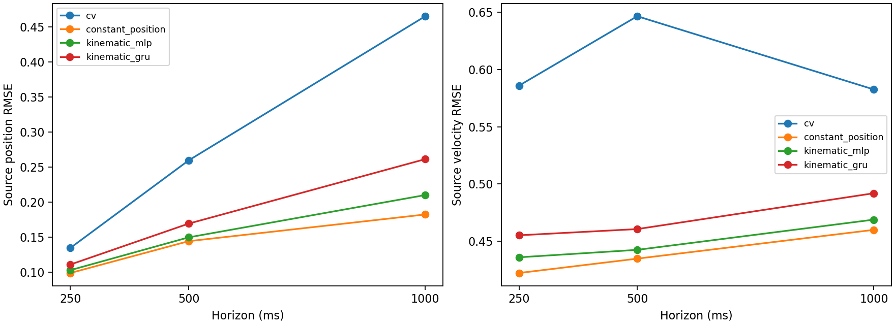

Proxy gates failed. Full Track 2 remains on hold.
Six fixed final runs, five training-participant stopping folds per run. Previously exposed P08/P18 validation; frozen six-second contexts. Four past position/velocity states; no functional coefficients, geometry, appearance or uncertainty inputs. Zero-initialized CV correction with translation-relative positions.

| Family | Horizon ms | Position RMSE | Velocity RMSE |
|---|---|---|---|
| cv | 250 | 0.13484 | 0.58592 |
| cv | 500 | 0.25960 | 0.64665 |
| cv | 1000 | 0.46500 | 0.58258 |
| constant_position | 250 | 0.09912 | 0.42206 |
| constant_position | 500 | 0.14448 | 0.43463 |
| constant_position | 1000 | 0.18252 | 0.45982 |
| kinematic_mlp | 250 | 0.10318 | 0.43578 |
| kinematic_mlp | 500 | 0.14993 | 0.44231 |
| kinematic_mlp | 1000 | 0.21020 | 0.46874 |
| kinematic_gru | 250 | 0.11118 | 0.45505 |
| kinematic_gru | 500 | 0.16950 | 0.46049 |
| kinematic_gru | 1000 | 0.26137 | 0.49183 |
Two validation participants and five source contexts; histories overlap. Targets are retrospective source kinematics. Constant position equals nearest-state continuation for position; its velocity is zero. It is not future interpolation or a nearest raw-observation estimator. Independent event/contact/identity and forecast uncertainty metrics remain unavailable. This study changes parameterization and loss as well as inputs; it cannot attribute gains solely to removing functional features.
Protocol, results and limits · Gates · Coverage and matching · Episodes · Source-speed diagnostics · Cached-state latency · Verification